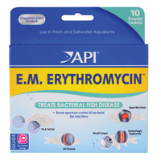
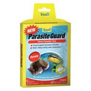

Members:Andre Sardino Arno - 13259907, Stephen Anthony Chandra - 13251860, Tshering Namgyay Wangchuck - 13257283, Constant Hughes-Treherne - 13340384
Fish-Tastic is a business that primarily focuses on the sale of fish and aquatic supplies, also offering events and classes on development in skills related to aqautic structures. Fish-Tastic has decided to venture into more than just the sales of fish and equipment. A new section will be introduced into the development of a pet shop, focusing on sales of puppies, and offering veterinary services. In order to succesfully implement the upcoming additions it will have to be communicated to the exisiting customers, and possibly future customers. Fish-Tastic is focusing on expanding their already established brand, and attract more customers, expanding their speciality by having the annoucement present on the new and redesigned website, which is a prime communication medium. A simplistic design is promonent and will allow for easy navigation, and not discourage the user.
In order to ensure that the website is optimal and that it meets the requirements, certain factors will determine popularity and if the focused function is executed properly. The website will feature a sales mechanism, data can be collected and see the amount of orders placed, determining if it is a viable feature. Fish-Tastic offers specific products and services to a niche market. If the ratio between visitors and customers is favourable then the sales portion of the website will be beneficial. Along with this function events will be introduced with classes additionaly, if executed correctly customers will be able to easily identify this and interact with it, the greater the number of attendees, the greater the success of this feature.
Previously the target audience included those whom share interest in the maintenace and keeping of fish, be it fresh or salt water fish. More specificly this would appeal to people who want to take on the responsibility of having a pet, and the challenge of maintaining the aquarium. Fish enthausists are mainly the target audience before the expasion, and possibly children who want their first pet. With the expansion to offering veterinary services and the sale of puppies, Fish-Tastic will attract a target audience who want's dogs, and would like to bring their dogs for check-ups and other procedures. Fish-Tastic will then cater to another audience being people who have a interest in dogs, and other animals that need the veterinary service.
Welcome To Fish-Tastic
Your one stop for all your fish needs, we provide only the best services, and we strive to keep our customers happy.
We give you the opportunity to order directly from us online, by filling in a simple order form. We have a great selection of fish and various other equipment. We also have classes which can help you with the maintenance of fish keeping.
In 2013, FISH~TASTIC is founded by Mr K.H.Chan, also, the co-sponsor of Singapore Sea Aquarium.FISH~TASTIC sell a variety of fishes prices ranging from affordable to luxury. FISH~TASTIC also carry product of accessories and fish foods of many well-known brands like Hikari, Tropical, and Rio. In 2014, FISH~TASTIC has been awarded Top Asia Enterprise 2014 and Singapore’s Outstanding Enterprise 2014. Nominated by members of the public for our excellence in service, products and social responsibility. For that, we are thankful for the recognition.
We have trading partners worldwide, whom we have business dealing with in countries all over the world. We continue to explore and look for trading partners in other parts of the world, so as to acquire more products to develop our farm into a one-stop shopping paradise for all fish lovers.
Come and visit our store to make your marine aquarium beautiful and pristine. We are here to share our knowledge and make your hobby as easy as possible. We believe that it is truly a privilege to be able to look at a part of the ocean everyday. If you have any questions, please feel free to contact us by phone or email.
Company Mission: To diversify the delights and pleasure of fishkeeping to the society
Company Vision: To be the number one fish aquarium in the global market
1. Fantail Goldfish ($1)
The Fantail is a show goldfish with one main distinguishing feature--a split, or double, tailfin! Rather than the long, slender body of the Common Goldfish or the Shubunkins, the Fantail Goldfish is one of the more rounded or egg-shaped fancy goldfish. These fish are bred for showing. Their main feature, the split tail fin, is medium in length and slightly forked. Length/Diameter Fish A Japanese version of the Fantail, the Ryukin Goldfish has a highly curved back and a wider caudal fin than the Fantail Goldfish. Both Fantail Goldfish and Ryukin Goldfish will generally reach about 6 inches (15 cm), though some hobbyist report their Fantails reaching up to a whopping 10- 12" (25-30+ cm).
Aquarium Care
These goldfish are hardy and easy to keep in a well-maintained tank. Minimum tank size is 10 gallons, but make sure water changes are frequent in such as small tank. Regular weekly water changes of 1/4 to 1/3 are strongly recommended to keep these fish healthy. Snails can be added as they reduce the algae in the tank, helping to keep it clean. Water Changes: Weekly - Goldfish produce more waste than most other freshwater fish and benefit greatly from more frequent water changes. Habitat For many years, it was believed that goldfish had originated from the Crucian Carp Carassius carassius described by Linnaeus in 1758. This fish has a wide range across the waters of the European continent, running west to east from England to Russia, north to Scandinavian countries in the Arctic Circle and as far south as the central France and the Black Sea. However, recent genetic research points to C. gibelio as a more likely ancestor.
Food
Minimum Tank Size
10 gal (38 L) - Ten gallons is the absolute minimum required to house this fish. It has high oxygen requirements and produces a lot of waste. It will have very stunted growth if it is kept in a smaller aquarium. Suitable for Nano Tank: Yes - A Nano tank is fine as long as it is 10 gallons or more.
2. Lionhead Goldfish ($12-38)
The Lionhead Goldfish is by far the most popular and well known of the dorsal-less goldfish.The lack of a stabilizing dorsal fin is a trait that is also seen in the Bubble Eye and the Celestial Eye Goldfish. Unlike the Common Goldfish and the Shubunkins, which have a long, slender body, the Lionhead is also one of the more rounded or egg-shaped fancy goldfish.
Maintenance
Lionhead Goldfish are some of the more delicate species of goldfish. Unlike the flat-bodied types of goldfish, they have a lower tolerance for pollution. They will need good care and plenty of space. When it comes to feeding, they will not thrive well with fast, competitive tank mates. Many people will keep goldfish in an aquarium with no heater or filtration. But for the best success in keeping goldfish, provide them the same filtration, especially biological filtration, that other aquarium residents enjoy. Aquarium Hardiness: Moderately Difficult - The Lionhead Fancy Goldfish is a comparatively weak relative of other Fancy Goldfish. The Wen, or head growth, is prone to infection. If the aquarist notices any rawness or irritation, it is wise to treat right away. Aquarist Experience Level: Intermediate
Food
Tank Size
Minimum Tank Size: 10 gal (38 L) - Ten gallons is the absolute minimum required to house this fish. It has high oxygen requirements and produces a lot of waste. It will have very stunted growth if it is kept in a smaller aquarium. Temperature: 65.0 to 72.0° F (18.3 to 22.2° C) - Goldfish are a cold water fish. Unlike the flat-bodied types of goldfish however, the Lionhead cannot tolerate temperatures much below 60° F (16° C). Breeding Temperature: - In the wild, goldfish spawn in the spring when water temperatures reach about 68° F (20° C). Range ph: 6.0-8.0 Hardness Range: 5 - 19 dGH Brackish: Sometimes - Goldfish are freshwater fish, but they have some tolerance for slightly brackish water. Any salinity for must be kept low, below 10%, a specific gravity of less than 1.002.
3. Oranda Goldfish
The Oranda Goldfish is one of the most popular goldfish in the world. It is favored for its hood, a fleshy growth on the top of its head called the wen. The wen starts to show at about 3 - 4 months, but only really begins to form at about 1 - 2 years. The hood is fully developed when the fish gets to be about 2-2 1/2 years old. The Oranda Goldfish in the picture is too young to have a well developed hood.
Fish Keeping Difficulty
Oranda Goldfish are some of the more delicate species of goldfish and not suggested for beginners. Unlike the flat-bodied types of goldfish, they have a lower tolerance for pollution. The Oranda's hood is subject to infection from debris, bacteria, and fungi that settles in the tiny folds. They will need good care and plenty of space Many people will keep goldfish in an aquarium with no heater or filtration. But for the best success in keeping goldfish, provide them the same filtration, especially biological filtration, that other aquarium residents enjoy. When it comes to feeding, they will not thrive with fast, competitive tankmates. Aquarium Hardiness: Moderately hardy - The Wen is prone to infection. If the aquarist notices any rawness or irritation, it is wise to treat right away. Aquarist Experience Level: Intermediate
Foods
Tank Size
Minimum Tank Size: 10 gal (38 L) - Ten gallons is the absolute minimum required to house this fish. It has high oxygen requirements and produces a lot of waste. It will have very stunted growth if it is kept in a smaller aquarium. Suitable for Nano Tank: Sometimes Substrate Type: Any - A medium-sized gravel works best. Lighting Needs: Moderate - normal lighting Temperature: 65.0 to 72.0° F (18.3 to 22.2° C) - Goldfish are a cold water fish. Unlike the flat-bodied types of goldfish however, the Oranda cannot tolerate temperatures much below 60° F (16° C). Breeding Temperature: - In the wild, goldfish spawn in the spring when water temperatures reach about 68° F (20° C). Range ph: 6.0-8.0 Hardness Range: 5 - 19 dGH Brackish: Sometimes - Goldfish are freshwater fish, but they have some tolerance for slightly brackish water. Any salinity for must be kept low, below 10%, a specific gravity of less than 1.002. Water Movement: Moderate Water Region: All - These fish will swim in all areas of the aquarium
1. Regel Tang($30) - The Blue Tang is also known as the Regal Tang, Blue Surgeonfish, and Indo-Pacific Blue Tang. This gorgeous fish is readily available, easy to keep, and is very interesting to watch. We knew of one that would spend time everyday in play, chasing bubbles from the bottom of the aquarium to the top! Readily available and very beautiful, the Blue Tang is probably the second most popular tang next to the Yellow tang!
Maintenance difficulty:
The Blue Tang, Regal Tang, Blue Surgeonfish, or Indo-Pacific Blue Tang is easy to keep.
Maintenance:
It is important that you feed tangs a good variety of live, frozen, and prepared formula foods. The Blue Tang eats zooplankton so they should be fed brine shrimp, mysis, grindal worms, and flake food. It is best to feed small amounts several times a day.
Habitat: Natural geographic location:
Blue Tang, Regal Tang, Blue Surgeonfish, or Indo-Pacific Blue Tang are found in the Indo-Pacific from East Africa to Japan. Swims at depths of 10 to 40 meters.
Foods:
In the sea they eat mainly zooplankton.
Minimum Tank Length/Size:
A minimum 75 gallon aquarium is recommended for an adult.
2. Chocolate Tang($57-$72)
Mimic Tang ~ Mimic Surgeonfish ~ Chocolate Surgeonfish
Family: Acanthuridae Most often the Chocolate Tang or Mimic Tang is available as a juvenile, and depending upon where it was collected, will look very much like the dwarf angelfish also living in that location. As this tang gets older it changes into its very pretty adult coloration shown in the picture above.
The Chocolate Tang or Mimic Tang is a good choice for the home aquarium. They go through an interesting color change from juvenile to adult and are favored because they don't get as large as many others in the same genus. They are moderately easy to care for as long as they are provided with a good environment and their nutritional needs are met.
Maintenance:
A quick and agile swimmer it will spend a good deal of its time in the open water and moving in and out of crevices. Frequent water changes are not necessary, rather normal water changes at 10% biweekly or 20% monthly are fine.
Maintenance difficulty:
The relatively small size of the Chocolate Tang lends itself to being a great addition to the marine aquarium. It is easy to acclimate and keep if you purchase a juvenile, adults are reportedly very hard to acclimate. Once it is use to its environment it is quite hardy, adaptable to a wide variety of foods, and can handle a wide range of water parameters. However it will do best in an environment that provides consistency, not only in water conditions and quality, but also in decor and fellow inhabitants. It can be housed in a fish only tank or in a reef environment as it will not harm corals or invertebrates.
Habitat: Natural geographic location:
As adults they are generally found singly inhabiting shallow lagoons and coastal reef slopes and crests, enjoying areas with corals, rock and sand at the base of reefs. They are found at depths between 13 to 196 feet (4 - 60 meters).
Foods:
The Chocolate Tang or Mimic Tang are primarily herbivores. In the wild they graze on benthic algae. In the aquarium the majority of their intake will be vegetable matter, but they do need some meaty foods as well. Provide lots of algae, prepared frozen formulas containing algae or spirulina, frozen brine and mysis shrimp, and flake foods. Japanese Nori or other seaweed can be adhered to the aquarium glass with a vegetable clip. An occasional live rock with micro and macro organisms will be greatly appreciated. Culturing macro algae like chaetomorphia in the tank is also a great idea. Feed at least three times a day.
Aquarium Parameters:
All surgeonfish/ tangs are quick agile swimmers and need lots of open areas. To feel secure they also need rocks/ corals with many nooks and crannies to hide in and to wedge themselves into at night for sleeping. This fish will not bother corals or inverts but it will graze on algae, so it highly useful in a reef environment.
Minimum Tank Length/Size:
A minimum 75 gallon (284 liters).
3. Doctorfish($5-$10)
Black Doctorfish ~ DoctorFamily: Acanthuridae One of the hardier surgeonfish, the Doctorfish is a good choice for the home aquarium. It is easy to care for as long as it is provided with a good environment and its nutritional needs are met. The main concern for this fish is a large tank so it can feel comfortable.
Length/Diameter of fish:
According to Fishbase adults reach 15.4 inches (39 cm).
Maintenance:
A quick and agile swimmer it will spend a good deal of its time in the open water and moving in and out of crevices. Frequent water changes are not necessary, rather normal water changes at 10% biweekly or 20% monthly are fine.
Maintenance difficulty:
This Doctorfish is easy to care for as long as it has an adequate environment and its nutritional needs are met. The main concern for this fish is a large tank so it can feel comfortable. It can be kept in a fish only tank as long as there is plenty of swimming room and some rocks/ corals with nooks and crannies to hide in. It is quite hardy, fairly disease resistant, and can handle a wide range of water parameters. However it will do best in an environment that provides consistency, not only in water conditions and quality, but also in decor and fellow inhabitants.
Habitat: Natural geographic location:
They are found at depths between 6.5 to 82 feet (2 - 25 meters). In their natural habitat they live singly, in pairs, or in loose groupings eating algae and detritus in rocky areas, inshore seagrass beds, or in shallow reefs. They sometimes travel with schools of the Ocean Surgeon A. bahianus.
Food:
In the aquarium they will eat algae, pieces of fish, mussel meat, flakes, tablets, and a variety of other foods. Provide prepared frozen marine formulas including those containing marine algae or spirulina, frozen brine and mysid shrimp, flake foods, and tablets. Japanese Nori or other seaweed can also be offered. An occasional live rock with micro and macro organisms will be greatly appreciated. Culturing macro algae like chaetomorphia in the tank is also a great idea. Feed 2 to 3 times a day in smaller amounts instead of a large quantity once a day.
Aquarium Parameters:
All surgeonfish/ tangs are quick agile swimmers and need lots of open areas. To feel secure they also need rocks/ corals with many nooks and crannies to hide in and to wedge themselves into at night for sleeping. As this fish will not bother corals but it will graze on algae. It is highly useful in a reef environment as long as their are no invertebrates as it may snack on them.
Minimum Tank Length/Size:
A minimum 125 gallon (473 liters). If attempting more than one of this genus, a tank with hundreds of gallons is needed as they are territorial.
4. Marine ButterflyFish($32)
Habitat:
Marine butterflyfish dwell among shallow reefs within a few meters of a home range. They are mostly diurnal, moving around and feeding during the daytime. At night they seek refuge among crevices in the reef and rocky outcroppings.
Length/Diameter:
Most butterflyfish moderately sized, ranging being between 4 - 9 inches(12-22 cm) in length, though a few are larger. The largest species are the Lined Butterflyfish Chaetodon lineolatus and the Saddle Butterflyfish Chaetodon ephippium. These two can reach up to 12 inches (30) in length.
Food:
Most members of this family are grazers that feed on algae, sponges, and corals. Some are omnivorous and eat small and planktonic animals while many species are obligate corallivores and must have live coral polyps as the primary source of nutrition. So unless you are willing to buy live corals for food these ones should be avoided.
Aquarium Size:
Butterflyfish need a good sized tank. The aquarium needs plenty of hiding spaces created with corals or rocks, preferably live rock, but also open space for swimming. They are generally shy fish that need peaceful tank mates. Some species however, especially the obligate coral feeders, can get very territorial. These fish are fine when kept either singly, in pairs, or in very small group but mixing them together with other Butterflyfish can be a problem. Great care is needed when trying to include different Butterflyfish in the same tank, and is often best avoided
Regular Fish Tank ($680)
Premium Fish Tank ($349)
Brandy Glass Fish Bowl; 7 Liters ($39.99)
600 Rio Water Pump
Hex Shield 125g ($43)
Wonder Shell ($1.99 -3.99)
API Pro Series; General Cure ($8.99)
Tropical Flakes ($6.50)
Algae Wafers ($11.99)
Bloodworms ($2.99)
Artificial Water Plant ($17.99)
Artificial Corals ($3.00)
Address:83 Punggol Central Waterway Point, Singapore 828761 #01-11
Contact Number:+65 6383 0111
Email:enquires@fishtastic.com
Instagram FacebookEmail Response Time:1 - 2 Working Days
Operating Hours:10 am - 9 pm
A great new addition has been announced, which is the sale of puppies, and a veterinary service.
The upcoming pet shop will be open starting from the 20th of June. The shop will be featuring pets of various breed from all over the world. The shop will be hosting various events such as fashion shows, grooming services, puppy shows with animal planet and a special event with a dog whisperer from all year round from 1st July – 20th September.
| Vet Consultation Service - FREE | 15th June 2016 |
|---|---|
| Puppies Fashion Show | 1st July 2016 |
| Pets Fashion Show | 19th July 2016 |
| Pets Grooming Services | 8th August 2016 |
| Puppy Show with Animal Planet | 20th August 2016 |
| Pets Grooming Competition | 9th September 2016 |
| Special Event with Dog Whisperer | 20th September 2016 |
| Fresh Water Fish | Salt Water Fish | Fish Tank | Tank Decoration | Fish Medicine |
|
|
|
|
|
|
|
|||
|
|
 | ||
|
||||
|  | ||||
|
|

provide links here to your 2 comps (images or Web pages)
provide a link here to your developed pages